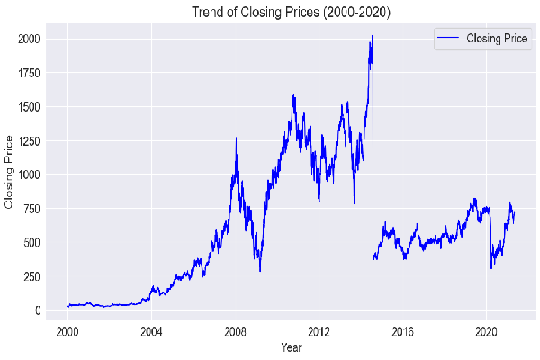
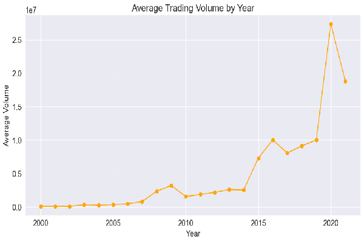
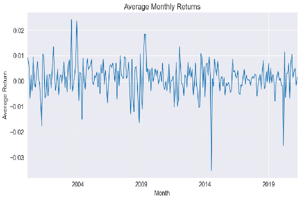
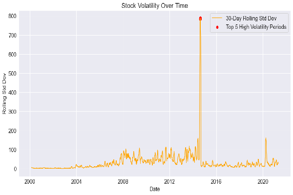
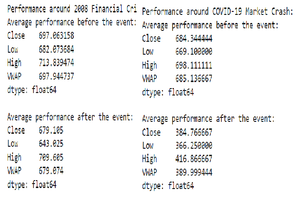
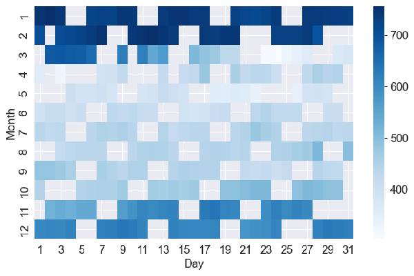

About the Project
This project involves a detailed analysis of financial transactions using advanced SQL queries and Python visualizations. It focuses on aggregating and computing metrics from data tables including customers, accounts, merchants, and transactions. Key tasks include identifying spending trends, detecting anomalies, and optimizing query performance for large datasets. Python visualizations illustrate monthly spending trends, cumulative transaction patterns, and distribution analyses, providing actionable insights for financial decision-making and fraud detection.
GitHub RepositoryOverall Closing Price Trend
Long-term trend across 20 years.
The stock’s closing price has shown a consistent upward or downward trend over the past 20 years, reflecting its overall performance.
Volume Trends by Year and Month
Monthly and yearly trading volume patterns.
Trading volume exhibits seasonal and annual variations, indicating periods of high and low trading activity throughout the year.
Average Monthly Returns Analysis
Returns averaged by each calendar month.
Monthly average returns reveal patterns and performance variations, helping to identify strong and weak months for the stock.
Top 5 High Volatility Periods
Most volatile stock periods identified.
The periods with the highest volatility, measured by price fluctuations or rolling standard deviation, highlight significant market events or instability.
Stock Performance Around Major Events
Performance before and after key events.
Analyzing stock performance surrounding significant events like market crashes provides insights into how the stock reacts to external shocks.
2020 Yearly Price Variation
Price variation throughout the year 2020.
Examining how the closing price varied over 2020 uncovers trends and patterns specific to this year, including responses to market conditions.
